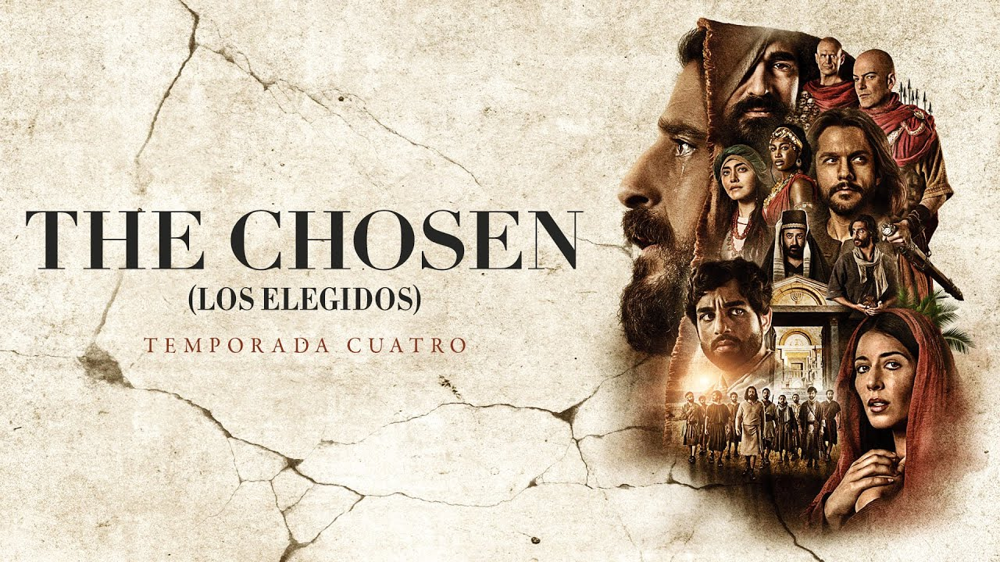

Juan 8:32
“Y conoceréis la verdad, y la verdad os hará libres.”
Juan 8:32
“Y conoceréis la verdad, y la verdad os hará libres.”
Juan 14:6
“Jesús le dijo: Yo soy el camino, y la verdad, y la vida; nadie viene al Padre, sino por mí.”
Un momento para descansar, compartir, orar y acercarnos juntos al Señor Jesús.
Conoce nuestro Grupo FamiliarEl Señor Jesús vendrá pronto para rescatarnos , llevarnos al Reino de Dios y a la vida eterna .
Morir en la cruz fue el acto de amor más grande del universo. Él murió por nosotros para perdonar nuestros pecados y salvarnos. .
La Fe no se trata de:
Se trata de una relación con Dios .
Y tampoco significa apagar tu mente. Creer en el Señor Jesús no está peleado con el sentido común, la ciencia o el pensamiento crítico.
Creemos que la ciencia descubre cómo funciona el mundo, pero la fe nos revela quién lo creó y con qué propósito.
El mismo Dios que nos dio la capacidad de razonar y cuestionar, espera que la usemos para buscar la verdad con un corazón dispuesto.
No estamos aquí para señalarte o creernos moralmente superiores. Todos cometemos errores, tenemos fallas y necesitamos perdón.
Si quieres conocer los inicios del evangelio del Señor Jesús aquí en la tierra , cómo llamó a sus discípulos , la historia de cada uno y sus primeras prédicas , te recomendamos ver la serie:
🎬 The Chosen (Los Elegidos) 🔗

Esta es una de las preguntas más importantes.
El sufrimiento no es el deseo de Dios , sino consecuencia del mal y de las decisiones humanas .
Es un tema profundo. Según la fe cristiana, Dios es quien juzga y nuestras decisiones en vida tienen consecuencias eternas .
Personas reales, con dudas reales, que encontraron respuestas inesperadas. Aquí tienes un adelanto de sus historias:
"Pasé años buscando errores en la Biblia para demostrar que la fe era un invento. No esperaba encontrar una verdad que transformaría mi caos en paz."
— Alejandro M., Ex-escéptico"Pensaba que la religión era solo para personas débiles. Hoy entiendo que se trata de una relación viva que restauró por completo mi vida y mi familia."
— Sofía R., DiseñadoraCuestionar, analizar y no estar de acuerdo en todo desde el principio no solo es válido, es parte del proceso.
No hay prisa por entender todo de inmediato ni se te pedirá que dejes tus preguntas en la puerta. Este es un lugar para explorar la verdad a tu propio ritmo, sin presiones.
Esto no es una cita con una iglesia ni con el hombre, es con el Señor Jesús , nuestro salvador. Él te ama y te está esperando con los brazos abiertos .